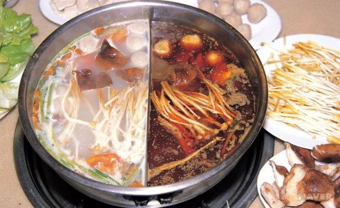

WHAT I WANT TO EAT? :
훠궈
>

훠궈란?
: 끓는 육수에 육류나 채소를 즉석에서 담궜다가 익혀서 바로 먹는 중국의 탕요리
원어명
火锅
국가
중국
구분
탕
주재료료
육류, 해산물, 각종 채소류
훠궈 맛집
미가양고기
하이디라오
인량
더 많은 순위 보기
훠궈 레시피
를 보고 싶다면 레시피 사진을 클릭 !
훠궈 관련 동영상
: 훠궈 VS 샤부샤부 다양한 탕 종류부터 소스까지, 알고 먹으면 더 맛있는 중국식 훠궈! - 수요미식회
이전 페이지